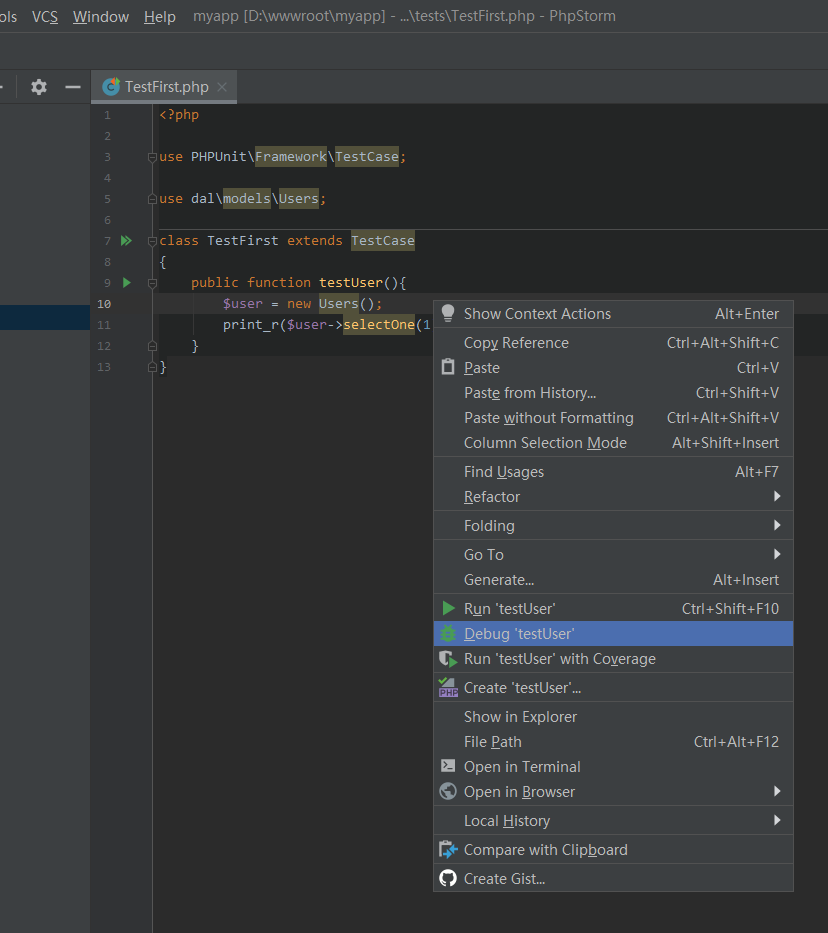
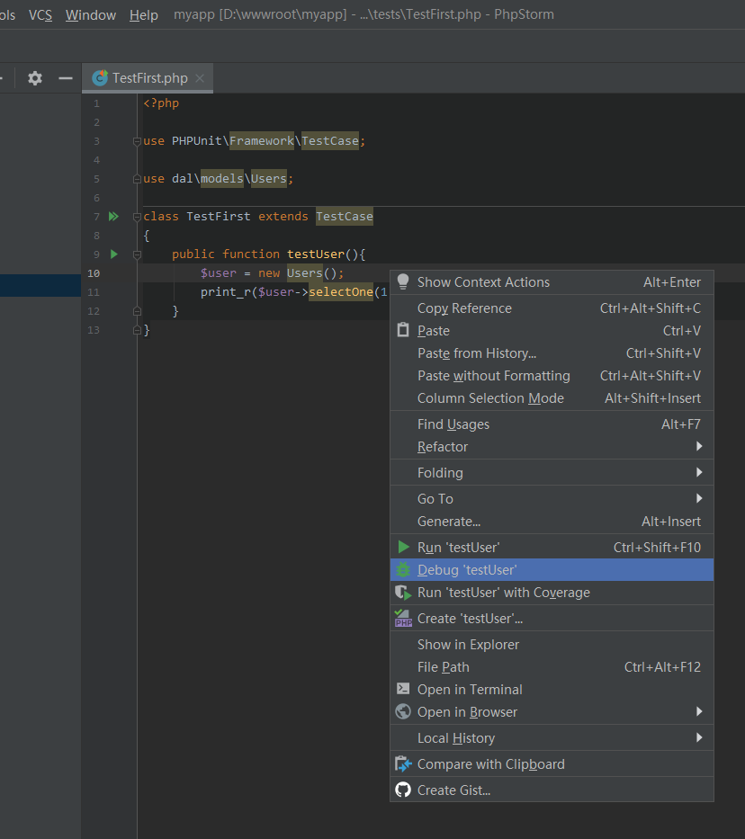

1.22 单元测试编辑器配置方法分享
这里分享phpstorm编辑器下载和设置phpunit的方法。
主要分两步：
首先，下载phpunit.phar文件。没有下载也可以在配置时点击链接下载。
然后，要指定php执行脚本路径。
最后，下载phpunit并配置启动文件。
一、下载phpunit.phar
1、点击http://www.phpunit.cn/manual/current/zh_cn/index.html文档安装教程下载php版本的phar文件。
二、指定php执行脚本路径
1、打开设置对话框，选择Language & Frameworks - PHP。选择语言版本，并点击CLI Interpreter右边的三点按钮。
2、进入对话框中，点击左上角+号，选择Local Path to Interpreter。
3、在PHP executable点击右侧文件夹按钮，在弹出框中找到需要使用的PHP版本脚本的执行文件php.exe。
4、选中结果如下图。不要有报错，有报错说明选中的文件或版本不对。然后点击确定。
三、下载phpunit并配置启动文件
1、在设置对话框中，进行Language & Frameworks - PHP - Test Frameworks。然后点击左上角+号，选择PHPUnit Local。
2、选择PHPUnit library为Path to phpunit.phar，并在弹出的对话框中选择下载的phpunit.phar路径，没有手动下载时点击Download phpunit.phar from https://phar.phpunit.de/phpunit.phar下载也行。
 3、选好以后，再在下面的Test Runner选中Default bootstrap file为当前应用根目录中的bootstrap.php文件。然后点击确定。
4、顺利的话便可以在单元测试文件中的某个函数内部右击选择Run或Debug进行测试。

3、选好以后，再在下面的Test Runner选中Default bootstrap file为当前应用根目录中的bootstrap.php文件。然后点击确定。
4、顺利的话便可以在单元测试文件中的某个函数内部右击选择Run或Debug进行测试。
